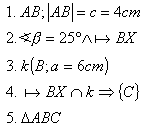
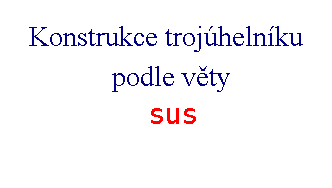
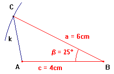

| Zadání : | |
| Sestrojte trojúhelník ABC, jestliže délka strany | a = 6cm c = 4cm |
| a velikost úhlu | b = 25° |
Náèrtek
Zadané prvky oznaèíme èervenì

| Všechny úhly trojúhelníka jsou konvexní (menší než 180°) |
Toto ovìøíme pro trojúhelník ABC b= 25° < 180° , trojúhelník ABC lze sestrojit.
| 2. Zápis konstrukce | 3. Konstrukce | |
|---|---|---|
 |  |
|